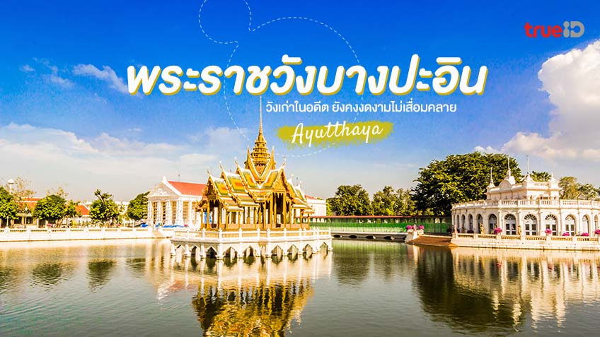

5.พระราชวังบางปะอิน
พระราชวังบางปะอิน ตั้งอยู่ใน ตำบลบ้านเลน อำเภอบางปะอิน จังหวัดพระนครศรีอยุธยา เป็นพระราชวังเก่าแก่ที่สร้างในสมัยกรุงศรีอยุธยา โดยสมเด็จพระเจ้าปราสาททอง เพราะเป็นที่ประสูติของพระองค์ ซึ่งที่นี่ถูกใช้เป็นสถานที่ที่ทรงใช้ประทับแรมของพระมหากษัตริย์แห่งกรุงศรีอยุธยา เนื่องจากเป็นพระราชวังใกล้พระนครนั่นเอง จนเมื่อหลังเสียกรุงครั้งที่ 2 นั้น ก็ถูกทิ้งร้างเอาไว้ค่ะ แต่มาในสมัยพระบาทสมเด็จพระจอมเกล้าเจ้าอยู่หัว รัชกาลที่ 4 ก็ได้เริ่มมีการบูรณะพระราชวังบางปะอิน และต่อมาพระบาทสมเด็จพระจุลจอมเกล้าเจ้าอยู่หัว รัชกาลที่ 5 ก็ทรงให้มีการบูรณะครั้งใหญ่ขึ้นมาค่ะ มีการสร้างพระที่นั่งและพระตำหนัก เพื่อใช้เป็นสถานที่รับรองพระราชอาคันตุกะจากต่างประเทศและพระราชทานงานเลี้ยงต่างๆ ตามประวัติ เล่ากันว่า ครั้งสมเด็จพระเอกาทศรถ ยังทรงดำรงพระยศพระมหาอุปราช ขณะที่พระองค์เสด็จประพาสทางชลมารค เรือพระที่นั่งถูกพายุใหญ่พัดจนล่มลง สมเด็จพระเอกาทศรถทรงว่ายน้ำขึ้นไปบน “เกาะบ้านเลน” และขณะที่ประทับอยู่กับชาวบ้าน พระองค์ได้หญิงชาวเกาะนามว่า “อิน” เป็นบาทบริจาริกา เลยเป็นที่มาที่ชาวบ้านใช้เรียกเกาะนี้กันว่า “เกาะบางปะอิน” และแน่นอนว่าสิ่งหนึ่งที่เราไม่ควรพลาดเมื่อเข้ามาเที่ยวชม พระราชวังบางปะอิน นั่นก็คือ การไปสักการะ อนุสาวรีย์พระนางเรือล่ม อนุสาวรีย์หินอ่อนที่รัชกาลที่ 5 ทรงพระกรุณาโปรดเกล้าฯ ให้สร้างขึ้นเพื่อรำลึกถึงสมเด็จพระนางเจ้าสุนันทากุมารีรัตน์ อัครมเหสีผู้เป็นที่รักยิ่งและพระเจ้าลูกเธอ เจ้าฟ้ากรรณาภรณ์เพชรรัตน์ นั่นเอง นอกจากนี้ ก็จะมีทั้ง หอเหมมณเฑียรเทวราช สภาคารราชประยูร พระที่นั่งไอศวรรย์ทิพย์อาสน์ พระที่นั่งวโรภาษพิมาน พระที่นั่งอุทยานภูมิเสถียร หอวิฑูรทัศนา พระที่นั่งเวหาศจำรูญ พระตำหนักฝ่ายใน เป็นต้นค่ะ บอกเลยว่าแต่ละที่สวยงดงามอย่างมาก ควรค่าแก่การเที่ยวชม สำหรับใครที่สนใจเที่ยวชม พระราชวังบางปะอิน ต้องแต่งตัวสุภาพทั้งชายและหญิงเลยนะคะ ห้ามสวมเสื้อแขนกุด กางเกงกระโปรงสั้นกว่าหัวเข่าหรือที่ดูไม่สุภาพค่ะ ห้ามสวมกางเกงรัดรูป (เลกกิ้ง) ห้ามสวมรองเท้าเปิดส้นที่ไม่มีสายรัดข้อเท้า สามารถใส่กางเกงยีนส์ได้แต่ห้ามมีรอยขาดค่ะ แต่ถ้าแต่งกายไม่ถูกตามระเบียบก็จะต้องสวมผ้าคลุม ผ้าถุง หรือเสื้อคลุม ที่ทางพระราชวังจัดเตรียมไว้ให้ด้วย